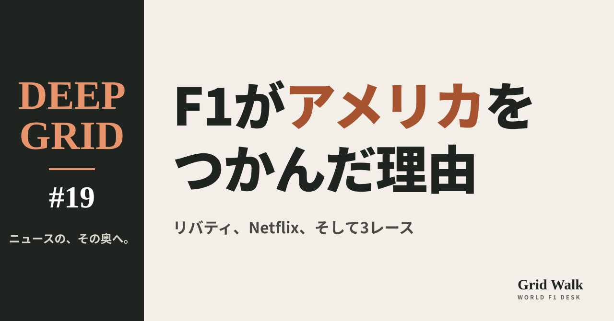
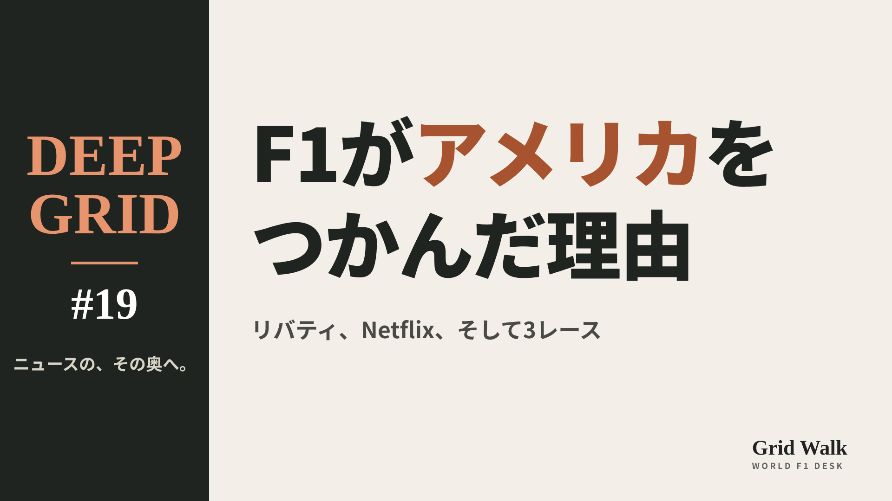

<meta charset="utf-8"><title>DEEP GRID #19 note貼り付け</title>
<style>
/* one column of numbered paste steps; text steps vs image steps differ by marker */
:root{--bg:#F5F4F0;--card:#FFFFFF;--ink:#1D2321;--mute:#5F665F;--line:#DCDAD2;--btn:#1F5FBF;--btnok:#2E8B4F;--img:#E9F3EC;--imgink:#22663B;--sans:'IBM Plex Sans JP','Hiragino Sans','Noto Sans JP',sans-serif}
@media (prefers-color-scheme:dark){:root:not([data-theme="light"]){--bg:#171A19;--card:#202423;--ink:#ECEDE8;--mute:#A3AAA2;--line:#343937;--btn:#4D8BE6;--btnok:#3FA866;--img:#1E2C23;--imgink:#8FD3A6;color-scheme:dark}}
:root[data-theme="dark"]{--bg:#171A19;--card:#202423;--ink:#ECEDE8;--mute:#A3AAA2;--line:#343937;--btn:#4D8BE6;--btnok:#3FA866;--img:#1E2C23;--imgink:#8FD3A6;color-scheme:dark}
body{background:var(--bg);color:var(--ink);font-family:var(--sans);font-size:15px;line-height:1.75;padding:20px 16px 60px}
main{max-width:680px;margin:0 auto;display:grid;gap:28px}
header h1{font-size:22px;margin:0 0 6px;text-wrap:balance}
header p{margin:0;color:var(--mute);font-size:14px}
nav{display:flex;gap:8px;flex-wrap:wrap;margin-top:12px}
nav a{border:1px solid var(--line);border-radius:999px;padding:4px 14px;color:var(--ink);text-decoration:none;font-size:14px;background:var(--card)}
.part h2{font-size:18px;line-height:1.5;margin:0 0 12px;text-wrap:balance;display:flex;gap:10px;align-items:baseline;flex-wrap:wrap}
.tag{font-size:13px;background:var(--ink);color:var(--bg);border-radius:6px;padding:1px 9px}
.steps{list-style:none;margin:0;padding:0;display:grid;gap:12px}
.st{background:var(--card);border:1px solid var(--line);border-radius:12px;padding:12px;min-width:0}
.hd{display:flex;align-items:center;gap:8px;margin-bottom:8px}
.no{width:26px;height:26px;border-radius:50%;background:var(--btn);color:#fff;display:inline-flex;align-items:center;justify-content:center;font-size:13px;font-weight:700;flex:0 0 26px}
.im .no{background:var(--btnok)}
.hd em{font-style:normal;font-size:12px;background:var(--img);color:var(--imgink);border-radius:6px;padding:0 8px}
.bx{font-size:13.5px;line-height:1.7;border:1px solid var(--line);border-radius:8px;padding:8px 10px;max-height:110px;overflow:auto;overflow-wrap:anywhere}
.bx.tall{max-height:150px}.bx p{margin:0 0 6px}.bx h2{font-size:14px;margin:8px 0 4px}.bx a{color:var(--btn)}
.st img{display:block;width:100%;max-width:100%;border:1px solid var(--line);border-radius:8px}
.sub{font-size:12.5px;color:var(--mute);margin:6px 0 0}
.cp{width:100%;margin-top:8px;padding:12px;border:0;border-radius:10px;background:var(--btn);color:#fff;font:600 15px var(--sans);cursor:pointer}
.cp.ok{background:var(--btnok)}.cp.dl{background:var(--btnok)}.cp:focus-visible{outline:3px solid var(--ink);outline-offset:2px}
.xh{font-size:15px;margin:20px 0 10px}
.fb{font-size:13px;line-height:1.7;margin:8px 0 0;padding:8px 10px;border-radius:8px;background:var(--img);color:var(--imgink)}
.opts{display:grid;grid-template-columns:repeat(auto-fill,minmax(240px,1fr));gap:10px}
.opt{min-width:0}.opt img{display:block;width:100%;border:1px solid var(--line);border-radius:8px}
.ol{display:flex;align-items:center;gap:8px;margin-top:6px}.ol b{font-size:13px;flex:0 0 auto}.ol .on{font-size:12.5px;color:var(--mute);flex:1;min-width:0}.ol .cp{width:auto;flex:0 0 auto;padding:9px 14px}.ol .cp{margin:0;padding:9px}
.toast{font-size:13px;color:var(--mute);margin-top:6px}
</style>
<main><header><h1>DEEP GRID #19 note貼り付け</h1><p>上から順に進めてください。青い番号は文章、緑は画像です。</p></header><section class="part"><h2><span class="tag">DEEP GRID #19</span>F1は、なぜアメリカでこんなに人気になったのか【DEEP GRID #19】</h2><ol class="steps">
<li class="st im"><div class="hd"><span class="no">1</span><b>見出し画像</b><em>画像</em></div><button class="cp dl" data-img="img/eye.png" data-name="deep-us-f1-boom_見出し画像.png">ダウンロード</button></li>
<li class="st"><div class="hd"><span class="no">2</span><b>タイトル</b></div><div class="bx" id="t">F1は、なぜアメリカでこんなに人気になったのか【DEEP GRID #19】</div><button class="cp" data-plain="t">タイトルをコピー</button></li>
<li class="st"><div class="hd"><span class="no">3</span><b>本文</b></div><div class="bx tall" id="r"><p>今年のF1は、アメリカで3戦を開き、アメリカのチームのキャデラックも走っている。けれど20年前のアメリカは、F1がなかなか根づかない国だった。2008年からの4年間はレースがなく、2012年に戻ったオースティンでも、観客は2015年まで年ごとに減っていった。何が流れを変えたのか。持ち主の交代、SNS、Netflix、テレビ、新しいレースと映画。数字と、その数字への疑問の両方から読む。</p><p>年ごとの観客数・視聴者数の表と、出典42件はサイトで → <a href="https://f1gridwalk.github.io/deep/us-f1-boom/?utm_source=note&amp;utm_campaign=us-f1-boom">https://f1gridwalk.github.io/deep/us-f1-boom/?utm_source=note&amp;utm_campaign=us-f1-boom</a></p><h2>先に結論</h2><p>① アメリカは、もともとF1が根づきにくい国だった。2007年のインディアナポリスのあと、開催権料で折り合わず、2008〜2011年はアメリカGPがなかった。2012年に始まったオースティンも、3日間の観客は初年度の26万5499人から、2015年には22万4011人まで減っている。</p><p>② 流れが変わったのは2017年だ。アメリカのリバティ・メディアがF1を買い、チームがパドックで撮った動画をSNSに出せるようにした。2019年にはNetflixの「Drive to Survive」が始まる。オースティンのサーキットの責任者は、チケットの売れ行きで「これまででいちばん大きな後押し」と話した。</p><p>③ 数字も大きく動いた。アメリカでF1を中継したESPNの1戦あたりの平均視聴者数は、2018年の55万4000人から、2025年は130万人と過去最多になった（ESPN）。オースティンの観客は2022年に約44万人（F1公式サイト）。2022年にマイアミ、2023年にラスベガスのレースも加わった。</p><p>④ ただし、一直線の右肩上がりではない。フェルスタッペンが勝ち続けた2023年は視聴者が8％減ったと報じられ、F1を知ったきっかけがDrive to Surviveという人は14％という調査もある。ラスベガスは初年度に練習走行が止まって裁判になり、2年目はチケットの売れ行きが見込みを下回った。</p><p>⑤ 2026年は分かれ目の年だ。アメリカの中継はApple TVだけになった。F1の親会社リバティ・メディアは8月の決算説明会で視聴者は前年より増えたと説明したが、USA TODAYは同じ月、調査会社Samba TVの推計として、9戦中8戦でF1を見た世帯が減ったと報じた。Appleは数字を公表しておらず、まだ白黒はつけられない。アメリカ人のレースドライバーも、いまはいない。</p><p><strong>あなたがF1を見るようになったきっかけは、何でしたか？</strong></p><h2>続きは F1 Grid Walk で</h2><p>ここから先の「アメリカは、F1が根づかない国だった」「2017年、持ち主が変わり、入口が広がった」「数字で見る「ブーム」」「疑問の声：頭打ち、Netflixの効果、ラスベガス」「2026年：Apple、キャデラック、そしてアメリカ人ドライバー」は、サイトで読めます。COTA（アメリカGP）の3日間の観客数、アメリカのテレビの平均視聴者数（1戦あたり）、目立ったレースの視聴者数、アメリカとF1の年表（2005〜2026年）、アメリカのファンについての主な調査の表も載せています。</p><p><strong>DEEP GRID #19「F1は、なぜアメリカでこんなに人気になったのか」</strong></p><p><a href="https://f1gridwalk.github.io/deep/us-f1-boom/">https://f1gridwalk.github.io/deep/us-f1-boom/</a></p><p>━━━━━━━━━━</p><p><strong>F1 Grid Walk では、世界のF1ニュースを毎日日本語でまとめています。</strong></p><p>海外の記事の要約を、毎日載せています。</p><p>ほかの海外記事も読みたい方は、F1 Grid Walkへ。</p><p><a href="https://f1gridwalk.github.io/">https://f1gridwalk.github.io/</a></p><p>━━━━━━━━━━</p><p><a href="https://grandprix.com/news/goodbye-indianapolis.html">出典：GrandPrix.com</a></p><p><a href="https://www.foxnews.com/sports/austin-to-host-u-s-grand-prix-from-2012">出典：ロイター通信（Fox News掲載）</a></p><p><a href="https://jalopnik.com/117-429-people-attended-austins-first-f1-united-states-5961654">出典：Jalopnik</a></p><p><a href="https://www.grandprix247.com/formula-1-news/record-crowds-at-the-united-states-grand-prix">出典：GrandPrix247</a></p><p><a href="https://digital-release.kxan.com/news/pivotal-year-for-formula-1-in-austin-amid-declining-attendance/amp/">出典：KXAN</a></p><p><a href="https://racer.com/2023/10/17/why-cota-is-going-for-better-not-bigger/">出典：RACER</a></p><p><a href="https://www.libertymedia.com/news/detail/305/liberty-media-corporation-completes-acquisition-of-formula-1">出典：リバティ・メディア</a></p><p><a href="https://www.grandprix247.com/formula-1-news/formula-1-relaxes-social-media-rules-for-teams">出典：GrandPrix247</a></p><p><a href="https://media.sportbusiness.com/news/formula-one-opens-up-to-social-media-video-content/">出典：SportBusiness</a></p><p><a href="https://www.motorauthority.com/news/1121601_formula-1-drive-to-survive-premiers-on-netflix-march-8">出典：Motor Authority</a></p><p><a href="https://www.gpblog.com/en/news/44071/-drive-to-survive-set-to-help-us-gp-attendance-set-new-record-.html">出典：GPblog</a></p><p><a href="https://www.planetf1.com/news/united-states-gp-set-for-record-attendance">出典：PlanetF1</a></p><p><a href="https://espnpressroom.com/press-release/espn-finishes-final-formula-1-season-with-all-time-viewership-record/">出典：ESPN</a></p><p><a href="https://www.blackbookmotorsport.com/news/f1-espn-viewership-audience-us-tv-apple-december-2025/">出典：Black Book Motorsport</a></p><p><a href="https://www.blackbookmotorsport.com/news/f1-las-vegas-grand-prix-espn-us-viewership-november-2025/">出典：Black Book Motorsport</a></p><p><a href="https://morningconsult.com/2022/03/15/f1-fandom-netflix">出典：Morning Consult</a></p><p><a href="https://www.formula1.com/en/latest/article/need-to-know-the-most-important-facts-stats-and-trivia-ahead-of-the-2025-united-states-grand-prix.1jmVcZ1nggWJpoUO6OLkjA">出典：F1公式サイト</a></p><p><a href="https://gpdestinations.com/2023-united-states-grand-prix-attendance/">出典：GP Destinations</a></p><p><a href="https://gpdestinations.com/race-facts-us-grand-prix/">出典：GP Destinations</a></p><p><a href="https://www.si.com/formula1/2022/05/10/f1-miami-grand-prix-breaks-records-for-espn-hard-rock-stadium">出典：スポーツ・イラストレイテッド</a></p><p><a href="https://www.formula1.com/en/latest/article/apple-becomes-broadcast-partner-for-formula-1-in-the-united-states.gtHt80hxS64ZMYxi36wAB">出典：F1公式サイト</a></p><p><a href="https://theplaylist.net/f1-movie-brad-pitt-apple-wb-box-office-600-million-joseph-kosinski-20250825/">出典：The Playlist</a></p><p><a href="https://www.formula1.com/en/latest/article/formula-1-and-motorsport-network-unveil-2025-global-fan-survey.4YqMebNy8BLaapyJfjzDXO">出典：F1公式サイト</a></p><p><a href="https://frontofficesports.com/article/formula-1s-growth-hits-a-speed-bump-with-u-s-viewers/">出典：Front Office Sports</a></p><p><a href="https://frontofficesports.com/article/verstappens-slump-sparks-f1-ratings-will-more-u-s-fans-watch/">出典：Front Office Sports</a></p><p><a href="https://thenightly.com.au/sport/the-real-reason-why-formula-ones-fanbase-is-shifting-and-its-not-the-netflix-effect-of-drive-to-survive-c-14521819">出典：The Nightly（CNBC）</a></p><p><a href="https://www.grandprix.com/news/verstappen-hamilton-alonso-snub-netflix-interviews.html">出典：GrandPrix.com</a></p><p><a href="https://www.cnbc.com/2023/11/18/motor-racings-las-vegas-grand-prix-hit-with-lawsuit-after-practice-cancelled.html">出典：CNBC</a></p><p><a href="https://ny1.com/nyc/all-boroughs/ap-top-news/2026/07/24/formula-1-parent-company-reaches-3m-settlement-in-las-vegas-grand-prix-2023-tickets-lawsuit">出典：AP通信（NY1掲載）</a></p><p><a href="https://www.the-race.com/formula-1/f1-plan-fix-las-vegas-grand-prix-ticket-sales-letdown/">出典：The Race</a></p><p><a href="https://frontofficesports.com/article/f1-ceo-defends-apple-leap/">出典：Front Office Sports</a></p><p><a href="https://racer.com/2026/02/23/apple-s-f1-broadcast-reach-will-be-bigger-than-espn-s---domenicali">出典：RACER</a></p><p><a href="https://lufkindailynews.com/news_reuters/national/f1-viewership-has-plunged-since-move-from-espn-to-apple-tv/article_912585a1-68f8-5b10-b04c-fb7f4c35e75b.html">出典：USA TODAY（Lufkin Daily News転載）</a></p><p><a href="https://www.ibtimes.co.uk/apple-f1-us-rights-audience-viewing-data-1825967">出典：IBTimes</a></p><p><a href="https://www.benzinga.com/node/62267311">出典：Benzinga</a></p><p><a href="https://the-race.com/business/f1-says-apple-partnership-thriving-but-not-how-many-watch/">出典：The Race</a></p><p><a href="https://www.the-race.com/formula-1/cadillac-gm-general-motors-f1-2026-entry-approved/">出典：The Race</a></p><p><a href="https://www.click2houston.com/sports/2025/08/26/cadillac-picks-bottas-and-perez-for-f1-debut-in-2026-prioritizing-experience-over-american-drivers/">出典：AP通信（KPRC掲載）</a></p><p><a href="https://www.clickondetroit.com/sports/2024/08/27/williams-drops-logan-sargeant-from-its-f1-lineup-mid-season-and-promotes-franco-colapinto/">出典：AP通信（WDIV掲載）</a></p><p><a href="https://www.gpblog.com/nl/nieuws/cadillac-laat-oog-vallen-op-amerikaans-talent-ex-mclaren">出典：GPblog（オランダ）</a></p><p><a href="https://www.thestar.com.my/sport/motorsport/2026/07/31/motor-racing-us-grand-prix-promoter-expects-record-crowd-despite-new-f1-rules">出典：ロイター通信（The Star掲載）</a></p><p><a href="https://www.formula1.com/en/latest/article/formula-1-reveals-calendar-for-2026-season.YctbMZWqBvrgyddrnauo8">出典：F1公式サイト</a></p></div><button class="cp" data-rich="r">本文をコピー</button></li>
<li class="st"><div class="hd"><span class="no">4</span><b>ハッシュタグ</b></div><div class="bx" id="h">#F1 #F1jp #DEEPGRID #アメリカGP #F1解説 #ドライブトゥサバイブ #キャデラック</div><button class="cp" data-plain="h">タグをコピー</button></li>
</ol><h3 class="xh">X</h3><ol class="steps">
<li class="st im"><div class="hd"><b>X用の画像</b><em>画像</em></div><button class="cp dl" data-img="img/x.png" data-name="x_deep-us-f1-boom.png">ダウンロード</button></li>
<li class="st"><div class="hd"><b>① noteをシェアするときの文</b></div><div class="bx" id="x0">アメリカでF1の人気が伸びたのは、いつ、何がきっかけだったのか。2017年の買収、Netflix、年3レース、そしてApple TVに移った今季の視聴者数の食い違いまで、数字で追いました #F1jp #DEEPGRID</div><button class="cp" data-plain="x0">コピー</button></li>
<li class="st"><div class="hd"><b>② ①への返信</b></div><div class="bx" id="x1">ほかの海外記事も読みたい方は、F1 Grid Walkへ。
https://f1gridwalk.github.io/deep/us-f1-boom/?utm_source=x&amp;utm_campaign=us-f1-boom</div><button class="cp" data-plain="x1">コピー</button></li>
<li class="st"><div class="hd"><b>③ ②への返信</b></div><div class="bx" id="x2">毎日の海外F1ニュースは、日本語でこちらにまとめています。
https://f1gridwalk.github.io/</div><button class="cp" data-plain="x2">コピー</button></li>
</ol></section></main><script>
function done(b,msg){const t=b.dataset.t||b.textContent;b.dataset.t=t;b.classList.add('ok');b.textContent=msg||'コピーしました';setTimeout(()=>{b.classList.remove('ok');b.textContent=t},2000)}
function selectEl(el){const r=document.createRange();r.selectNodeContents(el);const s=getSelection();s.removeAllRanges();s.addRange(r)}
async function rich(el,b){
  try{await navigator.clipboard.write([new ClipboardItem({'text/html':new Blob([el.innerHTML],{type:'text/html'}),'text/plain':new Blob([el.innerText],{type:'text/plain'})})]);done(b);return}catch(e){}
  selectEl(el);let ok=false;try{ok=document.execCommand('copy')}catch(e){}
  if(ok){getSelection().removeAllRanges();done(b)}else{done(b,'選択しました。コピーしてください')}}
async function plain(el,b){
  try{await navigator.clipboard.writeText(el.innerText);done(b);return}catch(e){}
  selectEl(el);let ok=false;try{ok=document.execCommand('copy')}catch(e){}
  if(ok){getSelection().removeAllRanges();done(b)}else{done(b,'選択しました。コピーしてください')}}
let dlns=null;(async()=>{try{dlns=await window.claude?.use?.("downloads")}catch(e){dlns=null}})();
async function img(src,b){
  b.dataset.t=b.dataset.t||b.textContent;
  if(!dlns){try{dlns=await window.claude?.use?.("downloads")}catch(e){}}
  if(!dlns){b.textContent='ダウンロードできませんでした';setTimeout(()=>{b.textContent=b.dataset.t},3500);return}
  try{const blob=await fetch(src).then(r=>r.blob());b.textContent='保存の確認を開いています…';
    await dlns.save({filename:b.dataset.name,data:blob});done(b,'ダウンロードしました')}
  catch(e){const c=e&&e.code;b.textContent=c==='declined'?'キャンセルしました':c==='rate_limited'?'少し待ってからもう一度押してください':'ダウンロードできませんでした';setTimeout(()=>{b.textContent=b.dataset.t},3500)}}
document.querySelectorAll('.cp').forEach(b=>b.addEventListener('click',()=>{
  if(b.dataset.rich)rich(document.getElementById(b.dataset.rich),b);
  else if(b.dataset.plain)plain(document.getElementById(b.dataset.plain),b);
  else img(b.dataset.img,b)}));
</script>